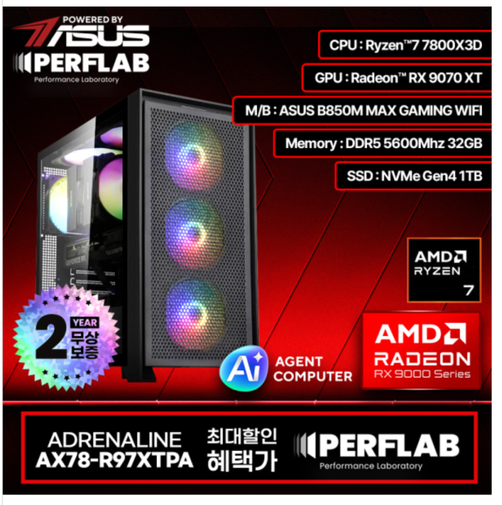
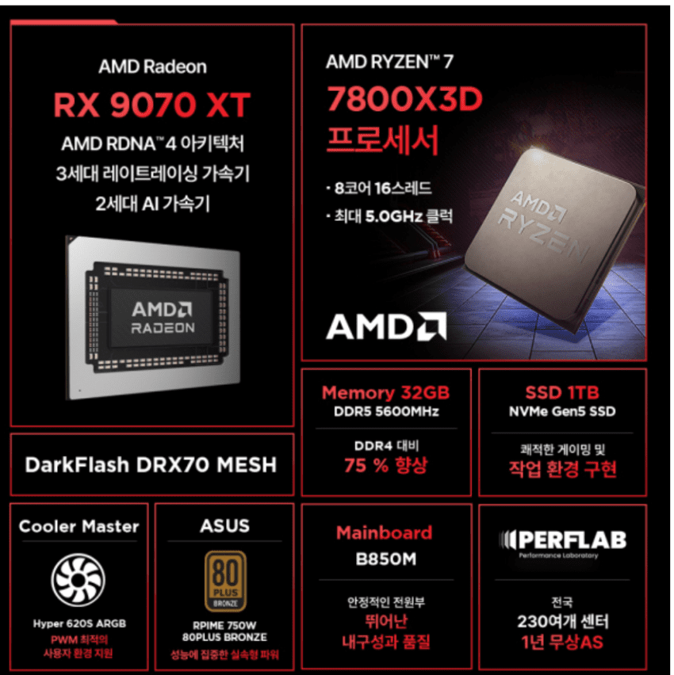
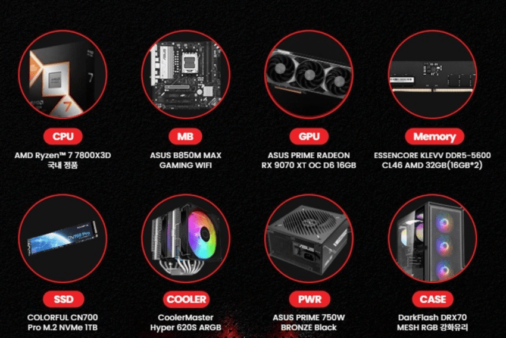
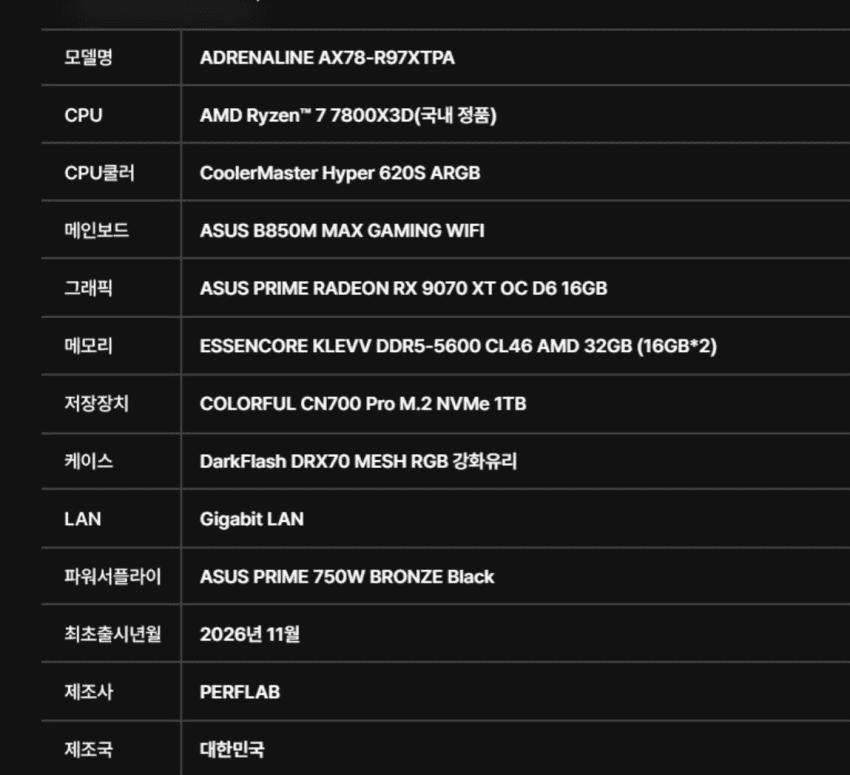
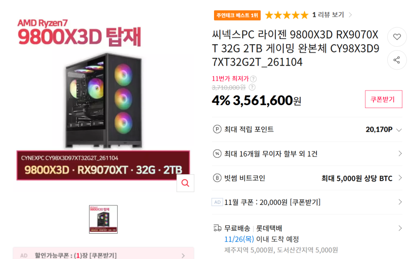
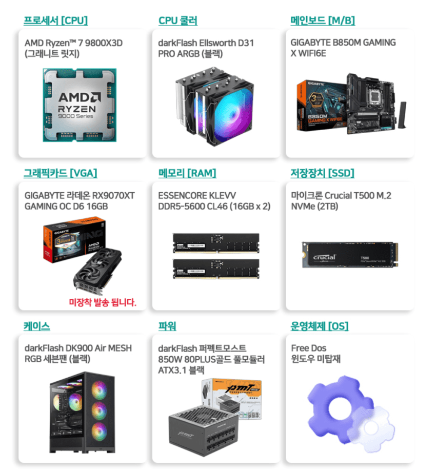

이거 어때보이나요? 이정도도 인방하면서 겜방 취미로 좀 즐겨볼려는데 롤이랑 스팀겜임 하고 gta정도 돌아가면되긴합니다 그냥 이거살바에 ti좀더 알아보고 사는게맞나요?


이것도 있긴한데




이거 어때보이나요? 이정도도 인방하면서 겜방 취미로 좀 즐겨볼려는데 롤이랑 스팀겜임 하고 gta정도 돌아가면되긴합니다 그냥 이거살바에 ti좀더 알아보고 사는게맞나요?


이것도 있긴한데
댓글
수집 당시 댓글 104개
삭제됨 · 11.15 02:23:52
· 컴갤러 · 11.15 02:25:04
· 컴갤러 · 11.15 02:27:55
· 컴갤러 · 11.15 02:28:39
· 컴갤러 · 11.15 02:28:49
· 컴갤러 · 11.15 02:29:06
컴갤러2 · 11.15 02:29:17
· 컴갤러 · 11.15 02:30:39
· ㅇㅇ · 11.15 10:24:11
· ㅇㅇ · 11.15 16:02:40
컴갤러3 · 11.15 03:18:40
· 컴갤러 · 11.15 03:55:10
· 컴갤러 · 11.15 03:55:54
ㅇㅇ · 11.15 09:46:30
· ㅇㅇ · 11.15 09:46:42
· ㅇㅇ · 11.15 09:48:37
ㅇㅇ · 11.15 09:48:12
ㅇㅇ · 11.15 09:49:17
ㅇㅇ · 11.15 09:50:12
· ㅇㅇ · 11.15 11:16:44
ㅇㅇ · 11.15 09:50:22
시험도태는공정?
AI도태는부정?
· ㅇㅇ · 11.15 09:50:28
우리아이ai도태된다ai안경사주자
실베도로롱 · 11.15 09:50:30
· ㅇㅇ · 11.15 09:50:37
시험도태는공정?
AI도태는부정?
· 실베도로롱 · 11.15 09:50:38
· ㅇㅇ · 11.15 09:50:49
우리아이ai도태된다ai안경사주자
ㅇㅇ · 11.15 09:51:09
시험도태는공정?
AI도태는부정?
포페란뜨 · 11.15 09:52:12
ㅇㅇ · 11.15 09:58:09
· ㅇㅇ · 11.15 10:01:29
ㅇㅇ · 11.15 09:58:21
ㅇㅇ · 11.15 09:58:43
ㅇㅇ · 11.15 09:59:05
· ㅇㅇ · 11.15 11:03:08
· ㅇㅇ · 11.15 11:42:21
· ㅇㅇ · 11.15 11:52:13
ㅇㅇ · 11.15 10:00:38
ㅇㅇ · 11.15 10:00:52
· ㅇㅇ · 11.15 11:16:22
ㅇㅇ · 11.15 10:00:57
ㅇㅇ · 11.15 10:02:58
ㅇㅇ · 11.15 10:03:18
ㅇㅇ · 11.15 10:03:30
ㅇㅇ · 11.15 10:03:53
ㅇㅇ · 11.15 10:04:44
· 파치카 · 11.15 10:06:31
· DD · 11.15 11:07:32
ㅇㅇ · 11.15 10:05:48
남정네 · 11.15 10:09:12
판갤러 · 11.15 10:09:24
라데온은 사는거 아닌데 병신새끼 ㅋㅋ
ㅇㅇ · 11.15 10:09:47
· ㅇㅇ · 11.15 10:28:34
· ㅇㅇ · 11.15 11:15:13
· ㅇㅇ · 11.15 12:26:52
· ㅇㅇ · 11.15 15:39:37
ㅇㅇ · 11.15 10:14:31
· ㅇㅇ · 11.15 10:17:29
· ㅇㅇ · 11.15 10:37:27
· ㅇㅇ · 11.15 11:14:53
스바루 · 11.15 10:18:17
순수비난 · 11.15 10:23:20
ㅇㅇ · 11.15 10:25:39
· ㅇㅇ · 11.15 10:30:12
· ㅇㅇ · 11.15 10:41:20
· ㅇㅇ · 11.15 10:53:53
· ㅇㅇ · 11.15 10:57:50
· ㅇㅇ · 11.15 10:59:09
· ㅇㅇ · 11.15 12:24:11
· ㅇㅇ · 11.15 12:58:36
· 창고 · 11.15 14:00:44
ㅇㅇ · 11.15 10:44:24
ㅇㅇ · 11.15 10:45:24
ㅇㅇ · 11.15 10:46:05
ㅇㅇ · 11.15 10:55:45
ㅇㅇ · 11.15 10:58:34
ㅇㅇ · 11.15 10:58:42
· ㅇㅇ · 11.15 11:00:12
ㅇㅇ · 11.15 11:02:32
· ㅇㅇ · 11.15 11:03:09
ㅇㅇ · 11.15 11:13:31
ㅇㅇ · 11.15 11:35:45
Yoo · 11.15 11:50:18
ㅇㅇ · 11.15 12:01:26
ㅇㅇ · 11.15 12:02:39
ㅇㅇ · 11.15 12:10:57
ㅇㅇ · 11.15 12:21:21
실비치노 · 11.15 12:28:34
ㅇㅇ · 11.15 12:38:25
ㅇㅇ · 11.15 12:42:21
ㅁㅁ · 11.15 13:06:15
ㅇㅇ · 11.15 13:11:57
ㅇㅇ · 11.15 13:16:27
· ㅇㅇ · 11.15 14:51:09
ㅇㅇ · 11.15 13:42:19
ㅇㅇ · 11.15 14:08:32
ㅇㅇ · 11.15 14:27:11
숲롤갤러 · 11.15 14:35:13
ㅇㅇ · 11.15 15:00:26
ㅇㅇ · 11.15 15:25:12
hallow_ · 11.15 15:59:31
컴갤러1 · 11.15 02:22:46
· 컴갤러 · 11.15 02:23:36
· 컴갤러 · 11.15 02:24:28
· ㅇㅇ · 11.15 09:53:54